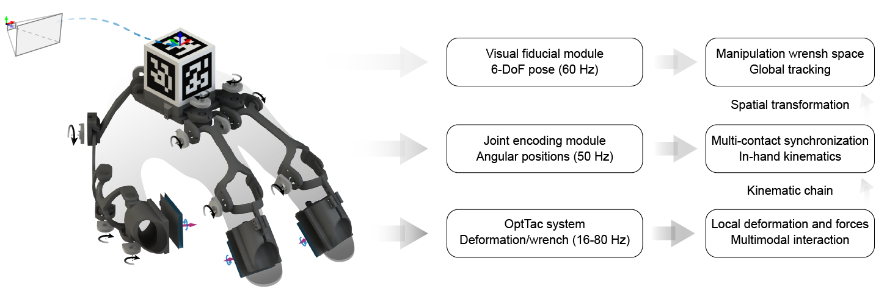
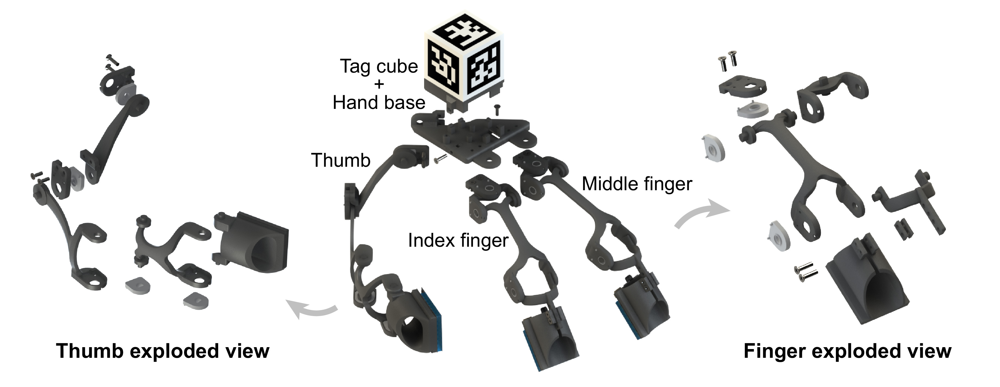
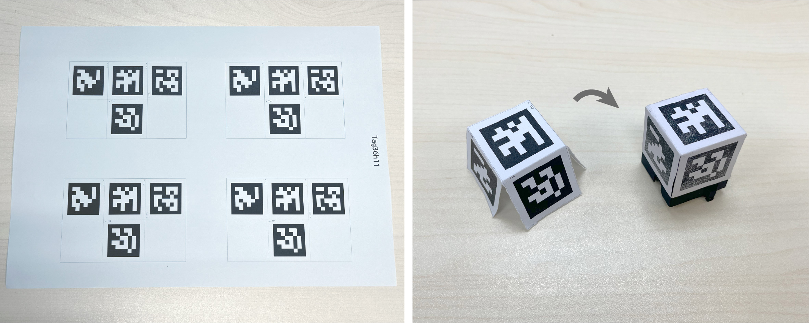
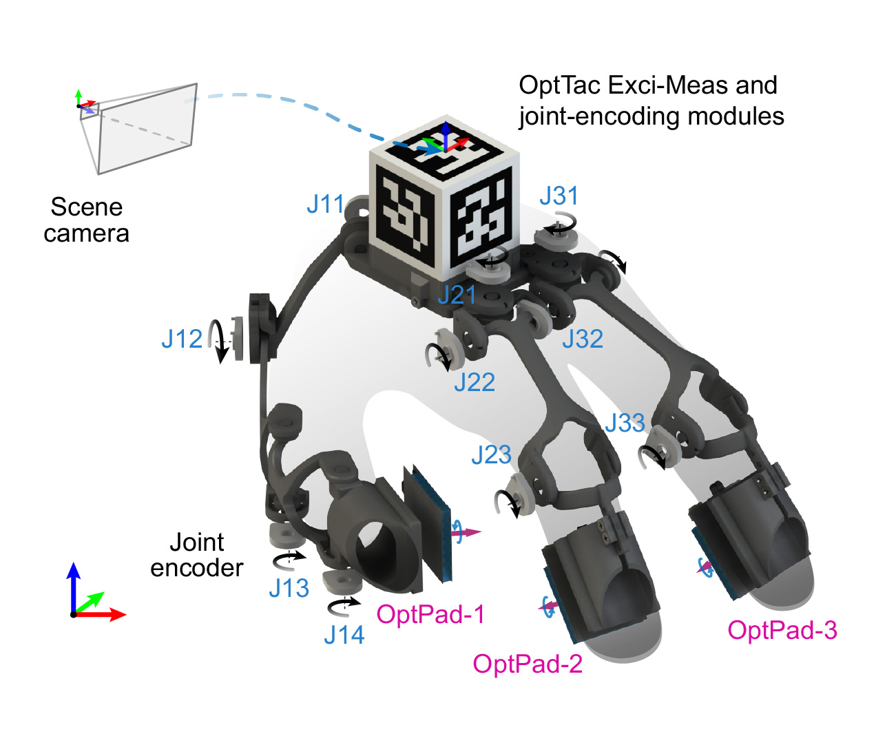

Materials and instructions for building the OptTac-integrated Universal Manipulation Interface.

The UMI exoskeleton includes four modular groups, PLA 3D-printed with STL at CAD_OptTac_UMI:
1. palm group: tag cube and hand base [palm_print folder]
2. thumb group: refer to the thumb exploded view [thumb_print folder]
3. index-finger group: refer to the finger exploded view [finger_print folder]
4. middle-finger group: refer to the finger exploded view [finger_print folder]
For index and middle fingers, the length of distal phalanges are adjustable by choosing different screw holes. The approx phalanges for two fingers are different, with individual STL files for each finger.

The Apriltag makers can be ink-printed with A4 papers (PDF) and attached on the 3D-printed tag cube, as demonstrated in the figure. By adapting an A4-paper print scale of 100%, the marker size aligns with the software's default configuration.

1. OptPad (x3): each of three fingers are equipped with an OptPad.
2. Joint encoder (x10): angular encoders (RDC5060) to capture unoccluded hand motion (further below).
3. OptTac modules (x1): the Exci-Meas module extended with a wiring board for joint reading (further below).
4. 2D visual camera (x1): we choose OV9281, with global shutter, 120FPS, monochrome, and USB-C interface.
1. RDC5060 soldering: to connect joint encoders, we soldered the ten RDC5060 encoders with connecting wires.
2. Extended wiring board: we provide the PCB source file of the extended wiring board for fabricating it with commcercial PCBA service.
More will be available soon.
Please check back later for the prepared materials.